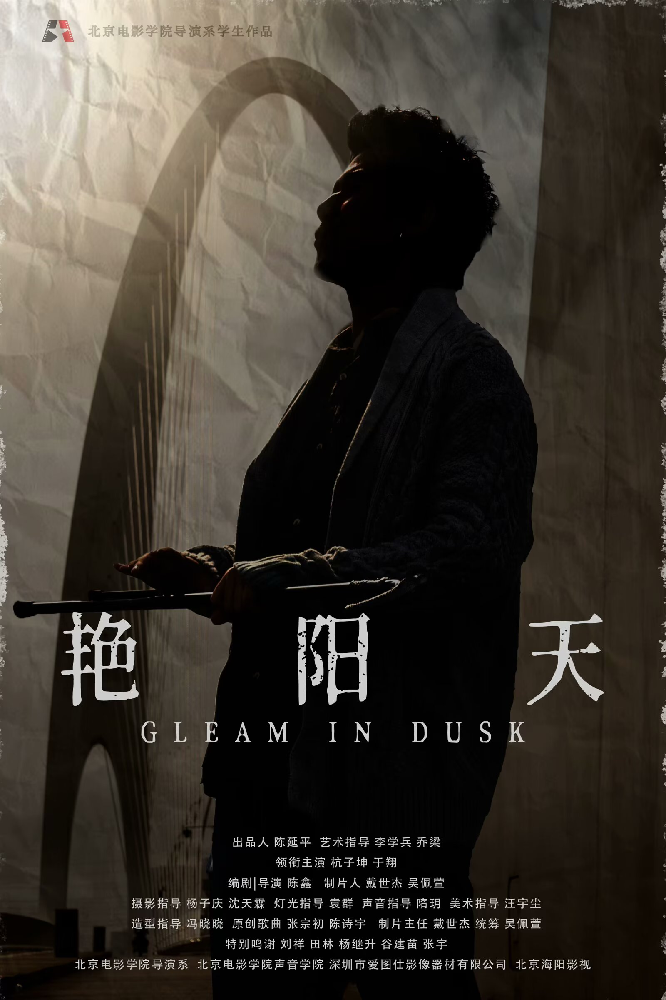

Balance

The final work explores a conscious effort to regulate attention and inner emotions while walking along the Water of Leith. It emulates a more traditional minimalist compositional approach through repetition, limited material and gradual transformation.
Vibraphone, xylophone, marimba and the synthesizer sound “Glow” move from irregular repetition toward greater rhythmic and harmonic order, expressing a balance between calmness and continuing inner restlessness.
The audio file will be connected here once the final project track is uploaded.